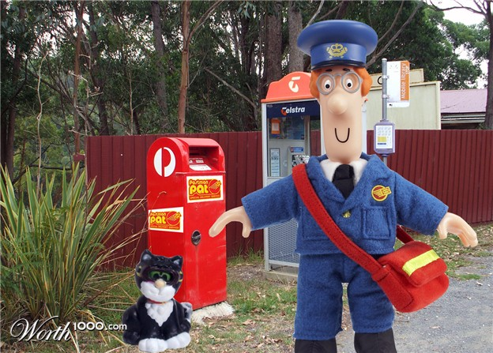
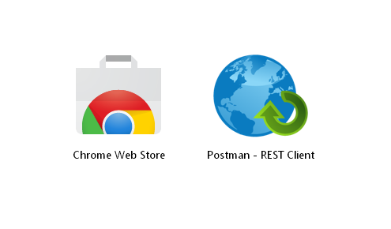
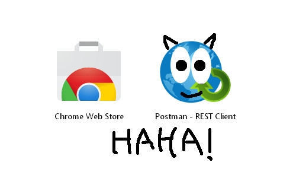
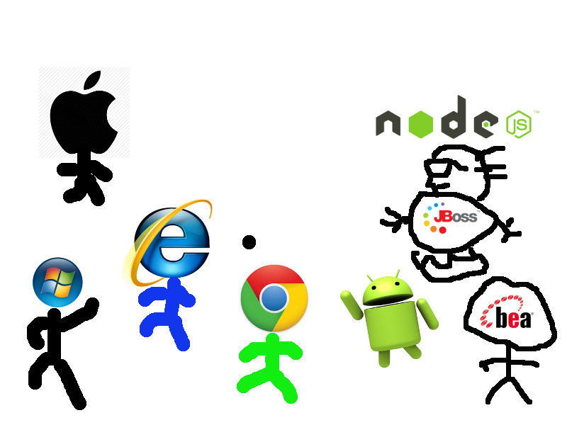
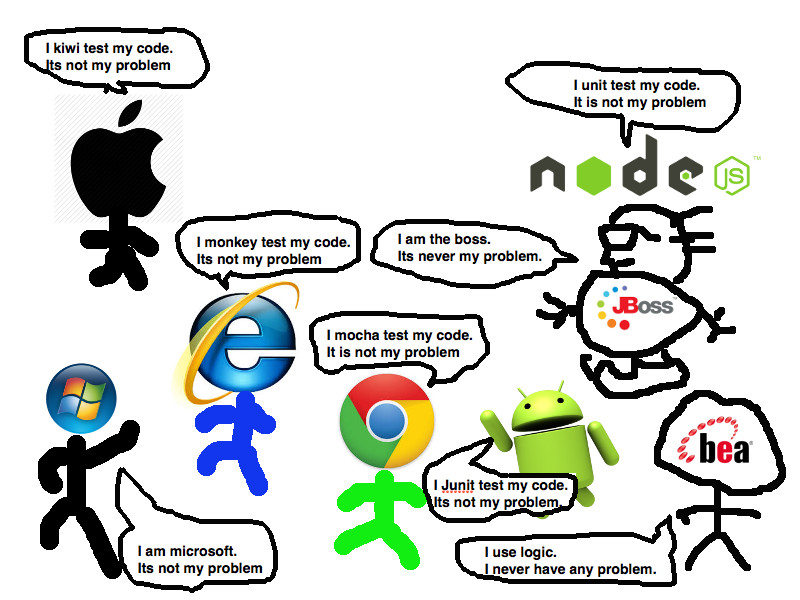
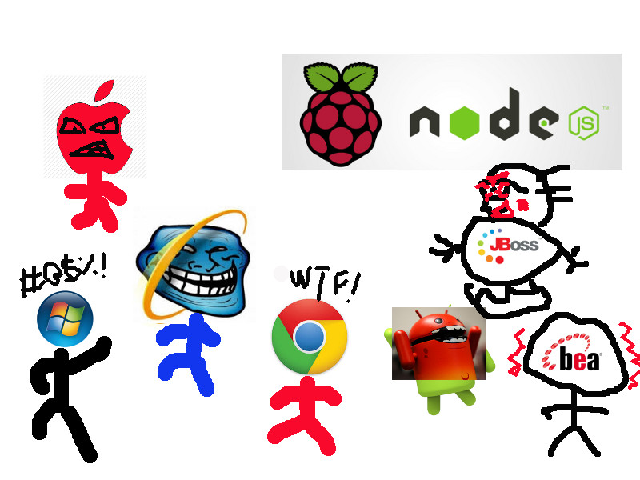

Postman, Jetpack and Newman
Making HTTP testing easy
by: Elvin Yeung & Abdur Rahman
So... what is postman?

Postman

Definition from their site
- A tool helps you be more efficient while working with APIs.
- Blah blah blah
Postman

My definition:
An http client with an interface built on top of Chrome to make requests via browser.
Let's see how it works...
Why postman?
- One common tool for all platforms
- Closely resembles user's browser
- Reusable service call
- No need to type the curl command!
Once apon a time, there are many platforms/server using http request...
Each platform are managed by different people, and more likely, different team...

One day, there goes the infamous HTTP Error

According to human nature, everyone in "denial defense" mode.

And the Blame Storming start....

Demo
After all the talk, let's see some demo!
Jetpack

It's Postman on steroid...
So, what does it do?
Jetpacks
- Create test cases easily without any setup
- Dymanically modify request with global / environment variable, so it's easy to chain them together
- Make test suite
MORE DEMO!!!!!!!
Newman
Who or What is Newman?
“…a command line companion tool for Postman. Newman let's you run Postman collections through your terminal.”
What does it do?
“ With Newman, you can integrate Postman collections with your build system. Or you can run automated tests… ”
Let's see it…
To the terminal!
Why?
- Because Postman with Jetpacks is an excellent tool for developing against RESTful APIs, but…
- there are often instances where manually running Jetpacks is not ideal such as:
- Running a suite of tests during the development process
- Automated integration testing upon event or at interval
- Situations where it is not infeasible or undesirable to have Jetpacks enabled on a machine
Who would use Newman?
- Travis, Team City or Jenkins
- Grunt, Gulp
- Basically, it allows running your Jetpacks during your build process with little additional development effort
- Output format can be tailored to your situation